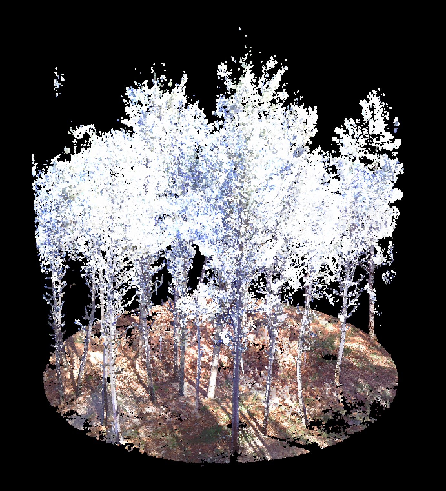
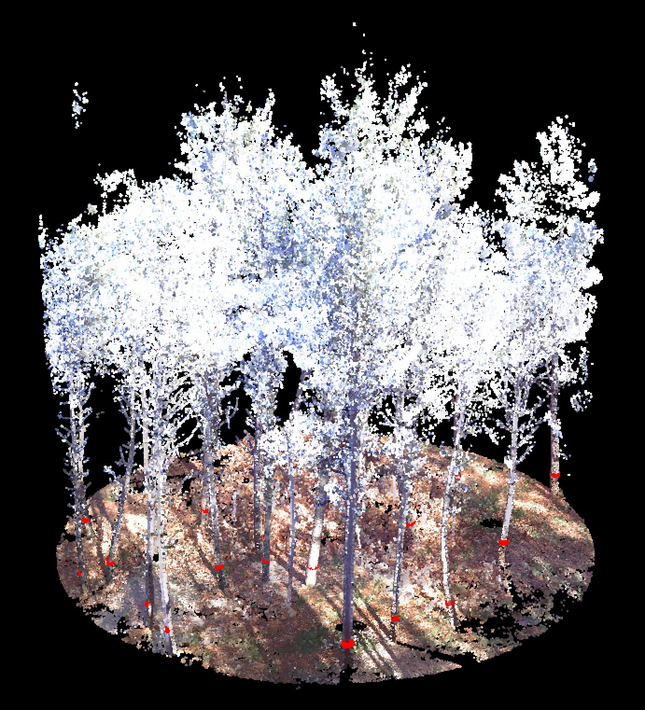

Tree-level variables
Anika Seppelt & Juan Alberto Molina Valero
Source:vignettes/tree_level.Rmd
tree_level.RmdFORTLS is used for processing of point cloud data derived from
terrestrial-based technologies such as Terrestrial Laser Scanning (TLS)
or Simultaneous Localization and Mapping (SLAM). Point cloud data must
be provided as .las or .laz files. The first obligatory step is the
normalization of the point cloud applying the function
normalize. The obtained normalized point clouds serve as
input data for the tree detection functions
tree.detection.single.scan,
tree.detection.multi.scan and
tree.detection.several.plots. The function
tree.detection.single.scan detects trees from normalized
TLS single-scan data and tree.detection.multi.scan from
normalized TLS multi-scan (or SLAM) data. If data from more than one
plot are to be analyzed automatically, the function
tree.detection.several.plots should be used, which includes
both the normalization and the tree detection functions and executes
these functions on each input plot sequentially.
Normalization
The aim of the normalization process is to obtain the coordinates
relative to the plot’s center and the ground level. In this process, the
functions readLAS, clip_circle,
classify_ground, grid_terrain and
normalize_height from the lidR package are used
internally (Roussel et al., 20201). The following steps are executed:
- Classification of points as “ground” or “not ground” by the cloth simulation filter (CSF) algorithm (Zhang et al., 20162)
- Generation of a digital terrain model (DTM) by spatial interpolation of the points classified as “ground”
- Normalization of the point cloud by subtracting the DTM and computation of the Cartesian, cylindrical and spherical coordinates
- Reduction of the density of the point cloud. In case of single-scan approach data, the densitiy is reduced by the point cropping (PCP) algorithm (Molina-Valero et al., 20193) and in the case of multi-scan approach data, the point density reduction is based on random selection of points
The following figure shows the normalized point cloud which is used
as example data below. The function plot from the lidR package is used
to generate the figure.

The arguments of normalize
The normalize function is applied as follows:
pcd.single <- normalize(las = "PinusRadiata.laz",
id = "PinusRadiata",
x.center = 0, y.center = 0,
max.dist = 10,
scan.approach = "single",
threads = parallel::detectCores())
#> [=========> ] 19% ETA: 8s [=========> ] 19% ETA: 8s [==========> ] 20% ETA: 8s [==========> ] 20% ETA: 8s [==========> ] 20% ETA: 8s [==========> ] 20% ETA: 8s [==========> ] 20% ETA: 8s [==========> ] 20% ETA: 8s [==========> ] 20% ETA: 8s [==========> ] 20% ETA: 8s [==========> ] 20% ETA: 8s [==========> ] 20% ETA: 8s [==========> ] 20% ETA: 8s [==========> ] 20% ETA: 8s [==========> ] 20% ETA: 8s [==========> ] 20% ETA: 8s [==========> ] 20% ETA: 8s [==========> ] 20% ETA: 8s [==========> ] 20% ETA: 8s [==========> ] 20% ETA: 8s [==========> ] 21% ETA: 8s [==========> ] 21% ETA: 8s [==========> ] 21% ETA: 8s [==========> ] 21% ETA: 8s [==========> ] 21% ETA: 8s [==========> ] 21% ETA: 8s [==========> ] 21% ETA: 8s [==========> ] 21% ETA: 8s [==========> ] 21% ETA: 8s [==========> ] 21% ETA: 8s [==========> ] 21% ETA: 8s [==========> ] 21% ETA: 8s [==========> ] 21% ETA: 8s [==========> ] 21% ETA: 8s [==========> ] 21% ETA: 8s [==========> ] 21% ETA: 8s [==========> ] 21% ETA: 8s [==========> ] 21% ETA: 8s [==========> ] 21% ETA: 8s [===========> ] 22% ETA: 8s [===========> ] 22% ETA: 8s [===========> ] 22% ETA: 8s [===========> ] 22% ETA: 8s [===========> ] 22% ETA: 8s [===========> ] 22% ETA: 8s [===========> ] 22% ETA: 8s [===========> ] 22% ETA: 8s [===========> ] 22% ETA: 8s [===========> ] 22% ETA: 8s [===========> ] 22% ETA: 8s [===========> ] 22% ETA: 7s [===========> ] 22% ETA: 7s [===========> ] 22% ETA: 7s [===========> ] 22% ETA: 7s [===========> ] 22% ETA: 7s [===========> ] 22% ETA: 7s [===========> ] 22% ETA: 7s [===========> ] 23% ETA: 7s [===========> ] 23% ETA: 7s [===========> ] 23% ETA: 7s [===========> ] 23% ETA: 7s [===========> ] 23% ETA: 7s [===========> ] 23% ETA: 7s [===========> ] 23% ETA: 7s [===========> ] 23% ETA: 7s [===========> ] 23% ETA: 7s [===========> ] 23% ETA: 7s [===========> ] 23% ETA: 7s [===========> ] 23% ETA: 7s [===========> ] 23% ETA: 7s [===========> ] 23% ETA: 7s [===========> ] 23% ETA: 7s [===========> ] 23% ETA: 7s [===========> ] 23% ETA: 7s [===========> ] 23% ETA: 7s [============> ] 24% ETA: 7s [============> ] 24% ETA: 7s [============> ] 24% ETA: 7s [============> ] 24% ETA: 7s [============> ] 24% ETA: 7s [============> ] 24% ETA: 7s [============> ] 24% ETA: 7s [============> ] 24% ETA: 7s [============> ] 24% ETA: 7s [============> ] 24% ETA: 7s [============> ] 24% ETA: 7s [============> ] 24% ETA: 7s [============> ] 24% ETA: 7s [============> ] 24% ETA: 7s [============> ] 24% ETA: 7s [============> ] 24% ETA: 7s [============> ] 24% ETA: 7s [============> ] 24% ETA: 7s [============> ] 25% ETA: 7s [============> ] 25% ETA: 7s [============> ] 25% ETA: 7s [============> ] 25% ETA: 7s [============> ] 25% ETA: 7s [============> ] 25% ETA: 7s [============> ] 25% ETA: 7s [============> ] 25% ETA: 7s [============> ] 25% ETA: 7s [============> ] 25% ETA: 7s [============> ] 25% ETA: 7s [============> ] 25% ETA: 7s [============> ] 25% ETA: 7s [============> ] 25% ETA: 7s [============> ] 25% ETA: 7s [============> ] 25% ETA: 7s [============> ] 25% ETA: 7s [============> ] 25% ETA: 7s [=============> ] 26% ETA: 7s [=============> ] 26% ETA: 7s [=============> ] 26% ETA: 7s [=============> ] 26% ETA: 7s [=============> ] 26% ETA: 7s [=============> ] 26% ETA: 7s [=============> ] 26% ETA: 7s [=============> ] 26% ETA: 7s [=============> ] 26% ETA: 7s [=============> ] 26% ETA: 7s [=============> ] 26% ETA: 7s [=============> ] 26% ETA: 7s [=============> ] 26% ETA: 7s [=============> ] 26% ETA: 7s [=============> ] 26% ETA: 7s [=============> ] 26% ETA: 7s [=============> ] 26% ETA: 7s [=============> ] 26% ETA: 7s [=============> ] 27% ETA: 7s [=============> ] 27% ETA: 7s [=============> ] 27% ETA: 7s [=============> ] 27% ETA: 7s [=============> ] 27% ETA: 7s [=============> ] 27% ETA: 7s [=============> ] 27% ETA: 7s [=============> ] 27% ETA: 7s [=============> ] 27% ETA: 7s [=============> ] 27% ETA: 7s [=============> ] 27% ETA: 7s [=============> ] 27% ETA: 7s [=============> ] 27% ETA: 7s [=============> ] 27% ETA: 7s [=============> ] 27% ETA: 7s [=============> ] 27% ETA: 7s [=============> ] 27% ETA: 7s [=============> ] 27% ETA: 7s [=============> ] 27% ETA: 7s [==============> ] 28% ETA: 7s [==============> ] 28% ETA: 7s [==============> ] 28% ETA: 7s [==============> ] 28% ETA: 7s [==============> ] 28% ETA: 7s [==============> ] 28% ETA: 7s [==============> ] 28% ETA: 7s [==============> ] 28% ETA: 7s [==============> ] 28% ETA: 7s [==============> ] 28% ETA: 7s [==============> ] 28% ETA: 7s [==============> ] 28% ETA: 7s [==============> ] 28% ETA: 7s [==============> ] 28% ETA: 7s [==============> ] 28% ETA: 7s [==============> ] 28% ETA: 7s [==============> ] 28% ETA: 7s [==============> ] 28% ETA: 7s [==============> ] 29% ETA: 7s [==============> ] 29% ETA: 7s [==============> ] 29% ETA: 7s [==============> ] 29% ETA: 7s [==============> ] 29% ETA: 7s [==============> ] 29% ETA: 7s [==============> ] 29% ETA: 7s [==============> ] 29% ETA: 7s [==============> ] 29% ETA: 7s [==============> ] 29% ETA: 7s [==============> ] 29% ETA: 7s [==============> ] 29% ETA: 7s [==============> ] 29% ETA: 7s [==============> ] 29% ETA: 7s [==============> ] 29% ETA: 7s [==============> ] 29% ETA: 7s [==============> ] 29% ETA: 7s [==============> ] 29% ETA: 7s [===============> ] 30% ETA: 7s [===============> ] 30% ETA: 7s [===============> ] 30% ETA: 7s [===============> ] 30% ETA: 7s [===============> ] 30% ETA: 7s [===============> ] 30% ETA: 7s [===============> ] 30% ETA: 7s [===============> ] 30% ETA: 7s [===============> ] 30% ETA: 7s [===============> ] 30% ETA: 7s [===============> ] 30% ETA: 7s [===============> ] 30% ETA: 7s [===============> ] 30% ETA: 7s [===============> ] 30% ETA: 7s [===============> ] 30% ETA: 7s [===============> ] 30% ETA: 7s [===============> ] 30% ETA: 7s [===============> ] 30% ETA: 6s [===============> ] 31% ETA: 6s [===============> ] 31% ETA: 6s [===============> ] 31% ETA: 6s [===============> ] 31% ETA: 6s [===============> ] 31% ETA: 6s [===============> ] 31% ETA: 6s [===============> ] 31% ETA: 6s [===============> ] 31% ETA: 6s [===============> ] 31% ETA: 6s [===============> ] 31% ETA: 6s [===============> ] 31% ETA: 6s [===============> ] 31% ETA: 6s [===============> ] 31% ETA: 6s [===============> ] 31% ETA: 6s [===============> ] 31% ETA: 6s [===============> ] 31% ETA: 6s [===============> ] 31% ETA: 6s [===============> ] 31% ETA: 6s [================> ] 32% ETA: 6s [================> ] 32% ETA: 6s [================> ] 32% ETA: 6s [================> ] 32% ETA: 6s [================> ] 32% ETA: 6s [================> ] 32% ETA: 6s [================> ] 32% ETA: 6s [================> ] 32% ETA: 6s [================> ] 32% ETA: 6s [================> ] 32% ETA: 6s [================> ] 32% ETA: 6s [================> ] 32% ETA: 6s [================> ] 32% ETA: 6s [================> ] 32% ETA: 6s [================> ] 32% ETA: 6s [================> ] 32% ETA: 6s [================> ] 32% ETA: 6s [================> ] 32% ETA: 6s [================> ] 32% ETA: 6s [================> ] 33% ETA: 6s [================> ] 33% ETA: 6s [================> ] 33% ETA: 6s [================> ] 33% ETA: 6s [================> ] 33% ETA: 6s [================> ] 33% ETA: 6s [================> ] 33% ETA: 6s [================> ] 33% ETA: 6s [================> ] 33% ETA: 6s [================> ] 33% ETA: 6s [================> ] 33% ETA: 6s [================> ] 33% ETA: 6s [================> ] 33% ETA: 6s [================> ] 33% ETA: 6s [================> ] 33% ETA: 6s [================> ] 33% ETA: 6s [================> ] 33% ETA: 6s [================> ] 33% ETA: 6s [=================> ] 34% ETA: 6s [=================> ] 34% ETA: 6s [=================> ] 34% ETA: 6s [=================> ] 34% ETA: 6s [=================> ] 34% ETA: 6s [=================> ] 34% ETA: 6s [=================> ] 34% ETA: 6s [=================> ] 34% ETA: 6s [=================> ] 34% ETA: 6s [=================> ] 34% ETA: 6s [=================> ] 34% ETA: 6s [=================> ] 34% ETA: 6s [=================> ] 34% ETA: 6s [=================> ] 34% ETA: 6s [=================> ] 34% ETA: 6s [=================> ] 34% ETA: 6s [=================> ] 34% ETA: 6s [=================> ] 34% ETA: 6s [=================> ] 35% ETA: 6s [=================> ] 35% ETA: 6s [=================> ] 35% ETA: 6s [=================> ] 35% ETA: 6s [=================> ] 35% ETA: 6s [=================> ] 35% ETA: 6s [=================> ] 35% ETA: 6s [=================> ] 35% ETA: 6s [=================> ] 35% ETA: 6s [=================> ] 35% ETA: 6s [=================> ] 35% ETA: 6s [=================> ] 35% ETA: 6s [=================> ] 35% ETA: 6s [=================> ] 35% ETA: 6s [=================> ] 35% ETA: 6s [=================> ] 35% ETA: 6s [=================> ] 35% ETA: 6s [=================> ] 35% ETA: 6s [==================> ] 36% ETA: 6s [==================> ] 36% ETA: 6s [==================> ] 36% ETA: 6s [==================> ] 36% ETA: 6s [==================> ] 36% ETA: 6s [==================> ] 36% ETA: 6s [==================> ] 36% ETA: 6s [==================> ] 36% ETA: 6s [==================> ] 36% ETA: 6s [==================> ] 36% ETA: 6s [==================> ] 36% ETA: 6s [==================> ] 36% ETA: 6s [==================> ] 36% ETA: 6s [==================> ] 36% ETA: 6s [==================> ] 36% ETA: 6s [==================> ] 36% ETA: 6s [==================> ] 36% ETA: 6s [==================> ] 36% ETA: 6s [==================> ] 37% ETA: 6s [==================> ] 37% ETA: 6s [==================> ] 37% ETA: 6s [==================> ] 37% ETA: 6s [==================> ] 37% ETA: 6s [==================> ] 37% ETA: 6s [==================> ] 37% ETA: 6s [==================> ] 37% ETA: 6s [==================> ] 37% ETA: 6s [==================> ] 37% ETA: 6s [==================> ] 37% ETA: 6s [==================> ] 37% ETA: 6s [==================> ] 37% ETA: 6s [==================> ] 37% ETA: 6s [==================> ] 37% ETA: 6s [==================> ] 37% ETA: 6s [==================> ] 37% ETA: 6s [==================> ] 37% ETA: 6s [===================> ] 38% ETA: 6s [===================> ] 38% ETA: 6s [===================> ] 38% ETA: 6s [===================> ] 38% ETA: 6s [===================> ] 38% ETA: 6s [===================> ] 38% ETA: 6s [===================> ] 38% ETA: 6s [===================> ] 38% ETA: 6s [===================> ] 38% ETA: 6s [===================> ] 38% ETA: 6s [===================> ] 38% ETA: 6s [===================> ] 38% ETA: 6s [===================> ] 38% ETA: 6s [===================> ] 38% ETA: 6s [===================> ] 38% ETA: 6s [===================> ] 38% ETA: 6s [===================> ] 38% ETA: 6s [===================> ] 38% ETA: 6s [===================> ] 38% ETA: 6s [===================> ] 39% ETA: 6s [===================> ] 39% ETA: 6s [===================> ] 39% ETA: 6s [===================> ] 39% ETA: 6s [===================> ] 39% ETA: 6s [===================> ] 39% ETA: 6s [===================> ] 39% ETA: 6s [===================> ] 39% ETA: 6s [===================> ] 39% ETA: 6s [===================> ] 39% ETA: 6s [===================> ] 39% ETA: 6s [===================> ] 39% ETA: 6s [===================> ] 39% ETA: 6s [===================> ] 39% ETA: 6s [===================> ] 39% ETA: 6s [===================> ] 39% ETA: 6s [===================> ] 39% ETA: 6s [===================> ] 39% ETA: 6s [====================> ] 40% ETA: 6s [====================> ] 40% ETA: 6s [====================> ] 40% ETA: 6s [====================> ] 40% ETA: 6s [====================> ] 40% ETA: 6s [====================> ] 40% ETA: 6s [====================> ] 40% ETA: 6s [====================> ] 40% ETA: 6s [====================> ] 40% ETA: 6s [====================> ] 40% ETA: 6s [====================> ] 40% ETA: 6s [====================> ] 40% ETA: 6s [====================> ] 40% ETA: 6s [====================> ] 40% ETA: 6s [====================> ] 40% ETA: 6s [====================> ] 40% ETA: 6s [====================> ] 40% ETA: 6s [====================> ] 40% ETA: 6s [====================> ] 41% ETA: 6s [====================> ] 41% ETA: 6s [====================> ] 41% ETA: 6s [====================> ] 41% ETA: 6s [====================> ] 41% ETA: 6s [====================> ] 41% ETA: 6s [====================> ] 41% ETA: 6s [====================> ] 41% ETA: 6s [====================> ] 41% ETA: 6s [====================> ] 41% ETA: 6s [====================> ] 41% ETA: 6s [====================> ] 41% ETA: 6s [====================> ] 41% ETA: 6s [====================> ] 41% ETA: 6s [====================> ] 41% ETA: 6s [====================> ] 41% ETA: 6s [====================> ] 41% ETA: 6s [====================> ] 41% ETA: 6s [=====================> ] 42% ETA: 6s [=====================> ] 42% ETA: 6s [=====================> ] 42% ETA: 6s [=====================> ] 42% ETA: 6s [=====================> ] 42% ETA: 6s [=====================> ] 42% ETA: 6s [=====================> ] 42% ETA: 6s [=====================> ] 42% ETA: 6s [=====================> ] 42% ETA: 6s [=====================> ] 42% ETA: 6s [=====================> ] 42% ETA: 6s [=====================> ] 42% ETA: 6s [=====================> ] 42% ETA: 6s [=====================> ] 42% ETA: 6s [=====================> ] 42% ETA: 6s [=====================> ] 42% ETA: 6s [=====================> ] 42% ETA: 6s [=====================> ] 42% ETA: 6s [=====================> ] 43% ETA: 6s [=====================> ] 43% ETA: 6s [=====================> ] 43% ETA: 6s [=====================> ] 43% ETA: 5s [=====================> ] 43% ETA: 5s [=====================> ] 43% ETA: 5s [=====================> ] 43% ETA: 5s [=====================> ] 43% ETA: 5s [=====================> ] 43% ETA: 5s [=====================> ] 43% ETA: 5s [=====================> ] 43% ETA: 5s [=====================> ] 43% ETA: 5s [=====================> ] 43% ETA: 5s [=====================> ] 43% ETA: 5s [=====================> ] 43% ETA: 5s [=====================> ] 43% ETA: 5s [=====================> ] 43% ETA: 5s [=====================> ] 43% ETA: 5s [=====================> ] 43% ETA: 5s [======================> ] 44% ETA: 5s [======================> ] 44% ETA: 5s [======================> ] 44% ETA: 5s [======================> ] 44% ETA: 5s [======================> ] 44% ETA: 5s [======================> ] 44% ETA: 5s [======================> ] 44% ETA: 5s [======================> ] 44% ETA: 5s [======================> ] 44% ETA: 5s [======================> ] 44% ETA: 5s [======================> ] 44% ETA: 5s [======================> ] 44% ETA: 5s [======================> ] 44% ETA: 5s [======================> ] 44% ETA: 5s [======================> ] 44% ETA: 5s [======================> ] 44% ETA: 5s [======================> ] 44% ETA: 5s [======================> ] 44% ETA: 5s [======================> ] 45% ETA: 5s [======================> ] 45% ETA: 5s [======================> ] 45% ETA: 5s [======================> ] 45% ETA: 5s [======================> ] 45% ETA: 5s [======================> ] 45% ETA: 5s [======================> ] 45% ETA: 5s [======================> ] 45% ETA: 5s [======================> ] 45% ETA: 5s [======================> ] 45% ETA: 5s [======================> ] 45% ETA: 5s [======================> ] 45% ETA: 5s [======================> ] 45% ETA: 5s [======================> ] 45% ETA: 5s [======================> ] 45% ETA: 5s [======================> ] 45% ETA: 5s [======================> ] 45% ETA: 5s [======================> ] 45% ETA: 5s [=======================> ] 46% ETA: 5s [=======================> ] 46% ETA: 5s [=======================> ] 46% ETA: 5s [=======================> ] 46% ETA: 5s [=======================> ] 46% ETA: 5s [=======================> ] 46% ETA: 5s [=======================> ] 46% ETA: 5s [=======================> ] 46% ETA: 5s [=======================> ] 46% ETA: 5s [=======================> ] 46% ETA: 5s [=======================> ] 46% ETA: 5s [=======================> ] 46% ETA: 5s [=======================> ] 46% ETA: 5s [=======================> ] 46% ETA: 5s [=======================> ] 46% ETA: 5s [=======================> ] 46% ETA: 5s [=======================> ] 46% ETA: 5s [=======================> ] 46% ETA: 5s [=======================> ] 47% ETA: 5s [=======================> ] 47% ETA: 5s [=======================> ] 47% ETA: 5s [=======================> ] 47% ETA: 5s [=======================> ] 47% ETA: 5s [=======================> ] 47% ETA: 5s [=======================> ] 47% ETA: 5s [=======================> ] 47% ETA: 5s [=======================> ] 47% ETA: 5s [=======================> ] 47% ETA: 5s [=======================> ] 47% ETA: 5s [=======================> ] 47% ETA: 5s [=======================> ] 47% ETA: 5s [=======================> ] 47% ETA: 5s [=======================> ] 47% ETA: 5s [=======================> ] 47% ETA: 5s [=======================> ] 47% ETA: 5s [=======================> ] 47% ETA: 5s [========================> ] 48% ETA: 5s [========================> ] 48% ETA: 5s [========================> ] 48% ETA: 5s [========================> ] 48% ETA: 5s [========================> ] 48% ETA: 5s [========================> ] 48% ETA: 5s [========================> ] 48% ETA: 5s [========================> ] 48% ETA: 5s [========================> ] 48% ETA: 5s [========================> ] 48% ETA: 5s [========================> ] 48% ETA: 5s [========================> ] 48% ETA: 5s [========================> ] 48% ETA: 5s [========================> ] 48% ETA: 5s [========================> ] 48% ETA: 5s [========================> ] 48% ETA: 5s [========================> ] 48% ETA: 5s [========================> ] 48% ETA: 5s [========================> ] 49% ETA: 5s [========================> ] 49% ETA: 5s [========================> ] 49% ETA: 5s [========================> ] 49% ETA: 5s [========================> ] 49% ETA: 5s [========================> ] 49% ETA: 5s [========================> ] 49% ETA: 5s [========================> ] 49% ETA: 5s [========================> ] 49% ETA: 5s [========================> ] 49% ETA: 5s [========================> ] 49% ETA: 5s [========================> ] 49% ETA: 5s [========================> ] 49% ETA: 5s [========================> ] 49% ETA: 5s [========================> ] 49% ETA: 5s [========================> ] 49% ETA: 5s [========================> ] 49% ETA: 5s [========================> ] 49% ETA: 5s [========================> ] 49% ETA: 5s [=========================> ] 50% ETA: 5s [=========================> ] 50% ETA: 5s [=========================> ] 50% ETA: 5s [=========================> ] 50% ETA: 5s [=========================> ] 50% ETA: 5s [=========================> ] 50% ETA: 5s [=========================> ] 50% ETA: 5s [=========================> ] 50% ETA: 5s [=========================> ] 50% ETA: 5s [=========================> ] 50% ETA: 5s [=========================> ] 50% ETA: 5s [=========================> ] 50% ETA: 5s [=========================> ] 50% ETA: 5s [=========================> ] 50% ETA: 5s [=========================> ] 50% ETA: 5s [=========================> ] 50% ETA: 5s [=========================> ] 50% ETA: 5s [=========================> ] 50% ETA: 5s [=========================> ] 51% ETA: 5s [=========================> ] 51% ETA: 5s [=========================> ] 51% ETA: 5s [=========================> ] 51% ETA: 5s [=========================> ] 51% ETA: 5s [=========================> ] 51% ETA: 5s [=========================> ] 51% ETA: 5s [=========================> ] 51% ETA: 5s [=========================> ] 51% ETA: 5s [=========================> ] 51% ETA: 5s [=========================> ] 51% ETA: 5s [=========================> ] 51% ETA: 5s [=========================> ] 51% ETA: 5s [=========================> ] 51% ETA: 5s [=========================> ] 51% ETA: 5s [=========================> ] 51% ETA: 5s [=========================> ] 51% ETA: 5s [=========================> ] 51% ETA: 5s [==========================> ] 52% ETA: 5s [==========================> ] 52% ETA: 5s [==========================> ] 52% ETA: 5s [==========================> ] 52% ETA: 5s [==========================> ] 52% ETA: 5s [==========================> ] 52% ETA: 5s [==========================> ] 52% ETA: 5s [==========================> ] 52% ETA: 5s [==========================> ] 52% ETA: 5s [==========================> ] 52% ETA: 5s [==========================> ] 52% ETA: 5s [==========================> ] 52% ETA: 5s [==========================> ] 52% ETA: 5s [==========================> ] 52% ETA: 5s [==========================> ] 52% ETA: 5s [==========================> ] 52% ETA: 5s [==========================> ] 52% ETA: 5s [==========================> ] 52% ETA: 5s [==========================> ] 53% ETA: 5s [==========================> ] 53% ETA: 5s [==========================> ] 53% ETA: 5s [==========================> ] 53% ETA: 5s [==========================> ] 53% ETA: 5s [==========================> ] 53% ETA: 5s [==========================> ] 53% ETA: 5s [==========================> ] 53% ETA: 5s [==========================> ] 53% ETA: 5s [==========================> ] 53% ETA: 5s [==========================> ] 53% ETA: 5s [==========================> ] 53% ETA: 5s [==========================> ] 53% ETA: 5s [==========================> ] 53% ETA: 5s [==========================> ] 53% ETA: 5s [==========================> ] 53% ETA: 5s [==========================> ] 53% ETA: 4s [==========================> ] 53% ETA: 4s [===========================> ] 54% ETA: 4s [===========================> ] 54% ETA: 4s [===========================> ] 54% ETA: 4s [===========================> ] 54% ETA: 4s [===========================> ] 54% ETA: 4s [===========================> ] 54% ETA: 4s [===========================> ] 54% ETA: 4s [===========================> ] 54% ETA: 4s [===========================> ] 54% ETA: 4s [===========================> ] 54% ETA: 4s [===========================> ] 54% ETA: 4s [===========================> ] 54% ETA: 4s [===========================> ] 54% ETA: 4s [===========================> ] 54% ETA: 4s [===========================> ] 54% ETA: 4s [===========================> ] 54% ETA: 4s [===========================> ] 54% ETA: 4s [===========================> ] 54% ETA: 4s [===========================> ] 54% ETA: 4s [===========================> ] 55% ETA: 4s [===========================> ] 55% ETA: 4s [===========================> ] 55% ETA: 4s [===========================> ] 55% ETA: 4s [===========================> ] 55% ETA: 4s [===========================> ] 55% ETA: 4s [===========================> ] 55% ETA: 4s [===========================> ] 55% ETA: 4s [===========================> ] 55% ETA: 4s [===========================> ] 55% ETA: 4s [===========================> ] 55% ETA: 4s [===========================> ] 55% ETA: 4s [===========================> ] 55% ETA: 4s [===========================> ] 55% ETA: 4s [===========================> ] 55% ETA: 4s [===========================> ] 55% ETA: 4s [===========================> ] 55% ETA: 4s [===========================> ] 55% ETA: 4s [============================> ] 56% ETA: 4s [============================> ] 56% ETA: 4s [============================> ] 56% ETA: 4s [============================> ] 56% ETA: 4s [============================> ] 56% ETA: 4s [============================> ] 56% ETA: 4s [============================> ] 56% ETA: 4s [============================> ] 56% ETA: 4s [============================> ] 56% ETA: 4s [============================> ] 56% ETA: 4s [============================> ] 56% ETA: 4s [============================> ] 56% ETA: 4s [============================> ] 56% ETA: 4s [============================> ] 56% ETA: 4s [============================> ] 56% ETA: 4s [============================> ] 56% ETA: 4s [============================> ] 56% ETA: 4s [============================> ] 56% ETA: 4s [============================> ] 57% ETA: 4s [============================> ] 57% ETA: 4s [============================> ] 57% ETA: 4s [============================> ] 57% ETA: 4s [============================> ] 57% ETA: 4s [============================> ] 57% ETA: 4s [============================> ] 57% ETA: 4s [============================> ] 57% ETA: 4s [============================> ] 57% ETA: 4s [============================> ] 57% ETA: 4s [============================> ] 57% ETA: 4s [============================> ] 57% ETA: 4s [============================> ] 57% ETA: 4s [============================> ] 57% ETA: 4s [============================> ] 57% ETA: 4s [============================> ] 57% ETA: 4s [============================> ] 57% ETA: 4s [============================> ] 57% ETA: 4s [=============================> ] 58% ETA: 4s [=============================> ] 58% ETA: 4s [=============================> ] 58% ETA: 4s [=============================> ] 58% ETA: 4s [=============================> ] 58% ETA: 4s [=============================> ] 58% ETA: 4s [=============================> ] 58% ETA: 4s [=============================> ] 58% ETA: 4s [=============================> ] 58% ETA: 4s [=============================> ] 58% ETA: 4s [=============================> ] 58% ETA: 4s [=============================> ] 58% ETA: 4s [=============================> ] 58% ETA: 4s [=============================> ] 58% ETA: 4s [=============================> ] 58% ETA: 4s [=============================> ] 58% ETA: 4s [=============================> ] 58% ETA: 4s [=============================> ] 58% ETA: 4s [=============================> ] 59% ETA: 4s [=============================> ] 59% ETA: 4s [=============================> ] 59% ETA: 4s [=============================> ] 59% ETA: 4s [=============================> ] 59% ETA: 4s [=============================> ] 59% ETA: 4s [=============================> ] 59% ETA: 4s [=============================> ] 59% ETA: 4s [=============================> ] 59% ETA: 4s [=============================> ] 59% ETA: 4s [=============================> ] 59% ETA: 4s [=============================> ] 59% ETA: 4s [=============================> ] 59% ETA: 4s [=============================> ] 59% ETA: 4s [=============================> ] 59% ETA: 4s [=============================> ] 59% ETA: 4s [=============================> ] 59% ETA: 4s [=============================> ] 59% ETA: 4s [==============================> ] 60% ETA: 4s [==============================> ] 60% ETA: 4s [==============================> ] 60% ETA: 4s [==============================> ] 60% ETA: 4s [==============================> ] 60% ETA: 4s [==============================> ] 60% ETA: 4s [==============================> ] 60% ETA: 4s [==============================> ] 60% ETA: 4s [==============================> ] 60% ETA: 4s [==============================> ] 60% ETA: 4s [==============================> ] 60% ETA: 4s [==============================> ] 60% ETA: 4s [==============================> ] 60% ETA: 4s [==============================> ] 60% ETA: 4s [==============================> ] 60% ETA: 4s [==============================> ] 60% ETA: 4s [==============================> ] 60% ETA: 4s [==============================> ] 60% ETA: 4s [==============================> ] 60% ETA: 4s [==============================> ] 61% ETA: 4s [==============================> ] 61% ETA: 4s [==============================> ] 61% ETA: 4s [==============================> ] 61% ETA: 4s [==============================> ] 61% ETA: 4s [==============================> ] 61% ETA: 4s [==============================> ] 61% ETA: 4s [==============================> ] 61% ETA: 4s [==============================> ] 61% ETA: 4s [==============================> ] 61% ETA: 4s [==============================> ] 61% ETA: 4s [==============================> ] 61% ETA: 4s [==============================> ] 61% ETA: 4s [==============================> ] 61% ETA: 4s [==============================> ] 61% ETA: 4s [==============================> ] 61% ETA: 4s [==============================> ] 61% ETA: 4s [==============================> ] 61% ETA: 4s [===============================> ] 62% ETA: 4s [===============================> ] 62% ETA: 4s [===============================> ] 62% ETA: 4s [===============================> ] 62% ETA: 4s [===============================> ] 62% ETA: 4s [===============================> ] 62% ETA: 4s [===============================> ] 62% ETA: 4s [===============================> ] 62% ETA: 4s [===============================> ] 62% ETA: 4s [===============================> ] 62% ETA: 4s [===============================> ] 62% ETA: 4s [===============================> ] 62% ETA: 4s [===============================> ] 62% ETA: 4s [===============================> ] 62% ETA: 4s [===============================> ] 62% ETA: 4s [===============================> ] 62% ETA: 3s [===============================> ] 62% ETA: 3s [===============================> ] 62% ETA: 3s [===============================> ] 63% ETA: 3s [===============================> ] 63% ETA: 3s [===============================> ] 63% ETA: 3s [===============================> ] 63% ETA: 3s [===============================> ] 63% ETA: 3s [===============================> ] 63% ETA: 3s [===============================> ] 63% ETA: 3s [===============================> ] 63% ETA: 3s [===============================> ] 63% ETA: 3s [===============================> ] 63% ETA: 3s [===============================> ] 63% ETA: 3s [===============================> ] 63% ETA: 3s [===============================> ] 63% ETA: 3s [===============================> ] 63% ETA: 3s [===============================> ] 63% ETA: 3s [===============================> ] 63% ETA: 3s [===============================> ] 63% ETA: 3s [===============================> ] 63% ETA: 3s [================================> ] 64% ETA: 3s [================================> ] 64% ETA: 3s [================================> ] 64% ETA: 3s [================================> ] 64% ETA: 3s [================================> ] 64% ETA: 3s [================================> ] 64% ETA: 3s [================================> ] 64% ETA: 3s [================================> ] 64% ETA: 3s [================================> ] 64% ETA: 3s [================================> ] 64% ETA: 3s [================================> ] 64% ETA: 3s [================================> ] 64% ETA: 3s [================================> ] 64% ETA: 3s [================================> ] 64% ETA: 3s [================================> ] 64% ETA: 3s [================================> ] 64% ETA: 3s [================================> ] 64% ETA: 3s [================================> ] 64% ETA: 3s [================================> ] 65% ETA: 3s [================================> ] 65% ETA: 3s [================================> ] 65% ETA: 3s [================================> ] 65% ETA: 3s [================================> ] 65% ETA: 3s [================================> ] 65% ETA: 3s [================================> ] 65% ETA: 3s [================================> ] 65% ETA: 3s [================================> ] 65% ETA: 3s [================================> ] 65% ETA: 3s [================================> ] 65% ETA: 3s [================================> ] 65% ETA: 3s [================================> ] 65% ETA: 3s [================================> ] 65% ETA: 3s [================================> ] 65% ETA: 3s [================================> ] 65% ETA: 3s [================================> ] 65% ETA: 3s [================================> ] 65% ETA: 3s [================================> ] 65% ETA: 3s [=================================> ] 66% ETA: 3s [=================================> ] 66% ETA: 3s [=================================> ] 66% ETA: 3s [=================================> ] 66% ETA: 3s [=================================> ] 66% ETA: 3s [=================================> ] 66% ETA: 3s [=================================> ] 66% ETA: 3s [=================================> ] 66% ETA: 3s [=================================> ] 66% ETA: 3s [=================================> ] 66% ETA: 3s [=================================> ] 66% ETA: 3s [=================================> ] 66% ETA: 3s [=================================> ] 66% ETA: 3s [=================================> ] 66% ETA: 3s [=================================> ] 66% ETA: 3s [=================================> ] 66% ETA: 3s [=================================> ] 66% ETA: 3s [=================================> ] 66% ETA: 3s [=================================> ] 67% ETA: 3s [=================================> ] 67% ETA: 3s [=================================> ] 67% ETA: 3s [=================================> ] 67% ETA: 3s [=================================> ] 67% ETA: 3s [=================================> ] 67% ETA: 3s [=================================> ] 67% ETA: 3s [=================================> ] 67% ETA: 3s [=================================> ] 67% ETA: 3s [=================================> ] 67% ETA: 3s [=================================> ] 67% ETA: 3s [=================================> ] 67% ETA: 3s [=================================> ] 67% ETA: 3s [=================================> ] 67% ETA: 3s [=================================> ] 67% ETA: 3s [=================================> ] 67% ETA: 3s [=================================> ] 67% ETA: 3s [=================================> ] 67% ETA: 3s [==================================> ] 68% ETA: 3s [==================================> ] 68% ETA: 3s [==================================> ] 68% ETA: 3s [==================================> ] 68% ETA: 3s [==================================> ] 68% ETA: 3s [==================================> ] 68% ETA: 3s [==================================> ] 68% ETA: 3s [==================================> ] 68% ETA: 3s [==================================> ] 68% ETA: 3s [==================================> ] 68% ETA: 3s [==================================> ] 68% ETA: 3s [==================================> ] 68% ETA: 3s [==================================> ] 68% ETA: 3s [==================================> ] 68% ETA: 3s [==================================> ] 68% ETA: 3s [==================================> ] 68% ETA: 3s [==================================> ] 68% ETA: 3s [==================================> ] 68% ETA: 3s [==================================> ] 69% ETA: 3s [==================================> ] 69% ETA: 3s [==================================> ] 69% ETA: 3s [==================================> ] 69% ETA: 3s [==================================> ] 69% ETA: 3s [==================================> ] 69% ETA: 3s [==================================> ] 69% ETA: 3s [==================================> ] 69% ETA: 3s [==================================> ] 69% ETA: 3s [==================================> ] 69% ETA: 3s [==================================> ] 69% ETA: 3s [==================================> ] 69% ETA: 3s [==================================> ] 69% ETA: 3s [==================================> ] 69% ETA: 3s [==================================> ] 69% ETA: 3s [==================================> ] 69% ETA: 3s [==================================> ] 69% ETA: 3s [==================================> ] 69% ETA: 3s [===================================> ] 70% ETA: 3s [===================================> ] 70% ETA: 3s [===================================> ] 70% ETA: 3s [===================================> ] 70% ETA: 3s [===================================> ] 70% ETA: 3s [===================================> ] 70% ETA: 3s [===================================> ] 70% ETA: 3s [===================================> ] 70% ETA: 3s [===================================> ] 70% ETA: 3s [===================================> ] 70% ETA: 3s [===================================> ] 70% ETA: 3s [===================================> ] 70% ETA: 3s [===================================> ] 70% ETA: 3s [===================================> ] 70% ETA: 3s [===================================> ] 70% ETA: 3s [===================================> ] 70% ETA: 3s [===================================> ] 70% ETA: 3s [===================================> ] 70% ETA: 3s [===================================> ] 71% ETA: 3s [===================================> ] 71% ETA: 3s [===================================> ] 71% ETA: 3s [===================================> ] 71% ETA: 3s [===================================> ] 71% ETA: 3s [===================================> ] 71% ETA: 3s [===================================> ] 71% ETA: 3s [===================================> ] 71% ETA: 3s [===================================> ] 71% ETA: 3s [===================================> ] 71% ETA: 3s [===================================> ] 71% ETA: 3s [===================================> ] 71% ETA: 3s [===================================> ] 71% ETA: 3s [===================================> ] 71% ETA: 3s [===================================> ] 71% ETA: 3s [===================================> ] 71% ETA: 3s [===================================> ] 71% ETA: 3s [===================================> ] 71% ETA: 3s [===================================> ] 71% ETA: 3s [====================================> ] 72% ETA: 3s [====================================> ] 72% ETA: 3s [====================================> ] 72% ETA: 3s [====================================> ] 72% ETA: 3s [====================================> ] 72% ETA: 3s [====================================> ] 72% ETA: 3s [====================================> ] 72% ETA: 3s [====================================> ] 72% ETA: 3s [====================================> ] 72% ETA: 3s [====================================> ] 72% ETA: 3s [====================================> ] 72% ETA: 3s [====================================> ] 72% ETA: 3s [====================================> ] 72% ETA: 3s [====================================> ] 72% ETA: 3s [====================================> ] 72% ETA: 3s [====================================> ] 72% ETA: 3s [====================================> ] 72% ETA: 3s [====================================> ] 72% ETA: 3s [====================================> ] 73% ETA: 3s [====================================> ] 73% ETA: 3s [====================================> ] 73% ETA: 3s [====================================> ] 73% ETA: 3s [====================================> ] 73% ETA: 3s [====================================> ] 73% ETA: 3s [====================================> ] 73% ETA: 3s [====================================> ] 73% ETA: 3s [====================================> ] 73% ETA: 3s [====================================> ] 73% ETA: 3s [====================================> ] 73% ETA: 3s [====================================> ] 73% ETA: 3s [====================================> ] 73% ETA: 3s [====================================> ] 73% ETA: 3s [====================================> ] 73% ETA: 3s [====================================> ] 73% ETA: 3s [====================================> ] 73% ETA: 3s [====================================> ] 73% ETA: 3s [=====================================> ] 74% ETA: 3s [=====================================> ] 74% ETA: 3s [=====================================> ] 74% ETA: 3s [=====================================> ] 74% ETA: 3s [=====================================> ] 74% ETA: 3s [=====================================> ] 74% ETA: 3s [=====================================> ] 74% ETA: 3s [=====================================> ] 74% ETA: 3s [=====================================> ] 74% ETA: 3s [=====================================> ] 74% ETA: 3s [=====================================> ] 74% ETA: 3s [=====================================> ] 74% ETA: 2s [=====================================> ] 74% ETA: 2s [=====================================> ] 74% ETA: 2s [=====================================> ] 74% ETA: 2s [=====================================> ] 74% ETA: 2s [=====================================> ] 74% ETA: 2s [=====================================> ] 74% ETA: 2s [=====================================> ] 75% ETA: 2s [=====================================> ] 75% ETA: 2s [=====================================> ] 75% ETA: 2s [=====================================> ] 75% ETA: 2s [=====================================> ] 75% ETA: 2s [=====================================> ] 75% ETA: 2s [=====================================> ] 75% ETA: 2s [=====================================> ] 75% ETA: 2s [=====================================> ] 75% ETA: 2s [=====================================> ] 75% ETA: 2s [=====================================> ] 75% ETA: 2s [=====================================> ] 75% ETA: 2s [=====================================> ] 75% ETA: 2s [=====================================> ] 75% ETA: 2s [=====================================> ] 75% ETA: 2s [=====================================> ] 75% ETA: 2s [=====================================> ] 75% ETA: 2s [=====================================> ] 75% ETA: 2s [======================================> ] 76% ETA: 2s [======================================> ] 76% ETA: 2s [======================================> ] 76% ETA: 2s [======================================> ] 76% ETA: 2s [======================================> ] 76% ETA: 2s [======================================> ] 76% ETA: 2s [======================================> ] 76% ETA: 2s [======================================> ] 76% ETA: 2s [======================================> ] 76% ETA: 2s [======================================> ] 76% ETA: 2s [======================================> ] 76% ETA: 2s [======================================> ] 76% ETA: 2s [======================================> ] 76% ETA: 2s [======================================> ] 76% ETA: 2s [======================================> ] 76% ETA: 2s [======================================> ] 76% ETA: 2s [======================================> ] 76% ETA: 2s [======================================> ] 76% ETA: 2s [======================================> ] 76% ETA: 2s [======================================> ] 77% ETA: 2s [======================================> ] 77% ETA: 2s [======================================> ] 77% ETA: 2s [======================================> ] 77% ETA: 2s [======================================> ] 77% ETA: 2s [======================================> ] 77% ETA: 2s [======================================> ] 77% ETA: 2s [======================================> ] 77% ETA: 2s [======================================> ] 77% ETA: 2s [======================================> ] 77% ETA: 2s [======================================> ] 77% ETA: 2s [======================================> ] 77% ETA: 2s [======================================> ] 77% ETA: 2s [======================================> ] 77% ETA: 2s [======================================> ] 77% ETA: 2s [======================================> ] 77% ETA: 2s [======================================> ] 77% ETA: 2s [======================================> ] 77% ETA: 2s [=======================================> ] 78% ETA: 2s [=======================================> ] 78% ETA: 2s [=======================================> ] 78% ETA: 2s [=======================================> ] 78% ETA: 2s [=======================================> ] 78% ETA: 2s [=======================================> ] 78% ETA: 2s [=======================================> ] 78% ETA: 2s [=======================================> ] 78% ETA: 2s [=======================================> ] 78% ETA: 2s [=======================================> ] 78% ETA: 2s [=======================================> ] 78% ETA: 2s [=======================================> ] 78% ETA: 2s [=======================================> ] 78% ETA: 2s [=======================================> ] 78% ETA: 2s [=======================================> ] 78% ETA: 2s [=======================================> ] 78% ETA: 2s [=======================================> ] 78% ETA: 2s [=======================================> ] 78% ETA: 2s [=======================================> ] 79% ETA: 2s [=======================================> ] 79% ETA: 2s [=======================================> ] 79% ETA: 2s [=======================================> ] 79% ETA: 2s [=======================================> ] 79% ETA: 2s [=======================================> ] 79% ETA: 2s [=======================================> ] 79% ETA: 2s [=======================================> ] 79% ETA: 2s [=======================================> ] 79% ETA: 2s [=======================================> ] 79% ETA: 2s [=======================================> ] 79% ETA: 2s [=======================================> ] 79% ETA: 2s [=======================================> ] 79% ETA: 2s [=======================================> ] 79% ETA: 2s [=======================================> ] 79% ETA: 2s [=======================================> ] 79% ETA: 2s [=======================================> ] 79% ETA: 2s [=======================================> ] 79% ETA: 2s [========================================> ] 80% ETA: 2s [========================================> ] 80% ETA: 2s [========================================> ] 80% ETA: 2s [========================================> ] 80% ETA: 2s [========================================> ] 80% ETA: 2s [========================================> ] 80% ETA: 2s [========================================> ] 80% ETA: 2s [========================================> ] 80% ETA: 2s [========================================> ] 80% ETA: 2s [========================================> ] 80% ETA: 2s [========================================> ] 80% ETA: 2s [========================================> ] 80% ETA: 2s [========================================> ] 80% ETA: 2s [========================================> ] 80% ETA: 2s [========================================> ] 80% ETA: 2s [========================================> ] 80% ETA: 2s [========================================> ] 80% ETA: 2s [========================================> ] 80% ETA: 2s [========================================> ] 81% ETA: 2s [========================================> ] 81% ETA: 2s [========================================> ] 81% ETA: 2s [========================================> ] 81% ETA: 2s [========================================> ] 81% ETA: 2s [========================================> ] 81% ETA: 2s [========================================> ] 81% ETA: 2s [========================================> ] 81% ETA: 2s [========================================> ] 81% ETA: 2s [========================================> ] 81% ETA: 2s [========================================> ] 81% ETA: 2s [========================================> ] 81% ETA: 2s [========================================> ] 81% ETA: 2s [========================================> ] 81% ETA: 2s [========================================> ] 81% ETA: 2s [========================================> ] 81% ETA: 2s [========================================> ] 81% ETA: 2s [========================================> ] 81% ETA: 2s [=========================================> ] 82% ETA: 2s [=========================================> ] 82% ETA: 2s [=========================================> ] 82% ETA: 2s [=========================================> ] 82% ETA: 2s [=========================================> ] 82% ETA: 2s [=========================================> ] 82% ETA: 2s [=========================================> ] 82% ETA: 2s [=========================================> ] 82% ETA: 2s [=========================================> ] 82% ETA: 2s [=========================================> ] 82% ETA: 2s [=========================================> ] 82% ETA: 1s [=========================================> ] 82% ETA: 1s [=========================================> ] 82% ETA: 1s [=========================================> ] 82% ETA: 1s [=========================================> ] 82% ETA: 1s [=========================================> ] 82% ETA: 1s [=========================================> ] 82% ETA: 1s [=========================================> ] 82% ETA: 1s [=========================================> ] 82% ETA: 1s [=========================================> ] 83% ETA: 1s [=========================================> ] 83% ETA: 1s [=========================================> ] 83% ETA: 1s [=========================================> ] 83% ETA: 1s [=========================================> ] 83% ETA: 1s [=========================================> ] 83% ETA: 1s [=========================================> ] 83% ETA: 1s [=========================================> ] 83% ETA: 1s [=========================================> ] 83% ETA: 1s [=========================================> ] 83% ETA: 1s [=========================================> ] 83% ETA: 1s [=========================================> ] 83% ETA: 1s [=========================================> ] 83% ETA: 1s [=========================================> ] 83% ETA: 1s [=========================================> ] 83% ETA: 1s [=========================================> ] 83% ETA: 1s [=========================================> ] 83% ETA: 1s [=========================================> ] 83% ETA: 1s [==========================================> ] 84% ETA: 1s [==========================================> ] 84% ETA: 1s [==========================================> ] 84% ETA: 1s [==========================================> ] 84% ETA: 1s [==========================================> ] 84% ETA: 1s [==========================================> ] 84% ETA: 1s [==========================================> ] 84% ETA: 1s [==========================================> ] 84% ETA: 1s [==========================================> ] 84% ETA: 1s [==========================================> ] 84% ETA: 1s [==========================================> ] 84% ETA: 1s [==========================================> ] 84% ETA: 1s [==========================================> ] 84% ETA: 1s [==========================================> ] 84% ETA: 1s [==========================================> ] 84% ETA: 1s [==========================================> ] 84% ETA: 1s [==========================================> ] 84% ETA: 1s [==========================================> ] 84% ETA: 1s [==========================================> ] 85% ETA: 1s [==========================================> ] 85% ETA: 1s [==========================================> ] 85% ETA: 1s [==========================================> ] 85% ETA: 1s [==========================================> ] 85% ETA: 1s [==========================================> ] 85% ETA: 1s [==========================================> ] 85% ETA: 1s [==========================================> ] 85% ETA: 1s [==========================================> ] 85% ETA: 1s [==========================================> ] 85% ETA: 1s [==========================================> ] 85% ETA: 1s [==========================================> ] 85% ETA: 1s [==========================================> ] 85% ETA: 1s [==========================================> ] 85% ETA: 1s [==========================================> ] 85% ETA: 1s [==========================================> ] 85% ETA: 1s [==========================================> ] 85% ETA: 1s [==========================================> ] 85% ETA: 1s [===========================================> ] 86% ETA: 1s [===========================================> ] 86% ETA: 1s [===========================================> ] 86% ETA: 1s [===========================================> ] 86% ETA: 1s [===========================================> ] 86% ETA: 1s [===========================================> ] 86% ETA: 1s [===========================================> ] 86% ETA: 1s [===========================================> ] 86% ETA: 1s [===========================================> ] 86% ETA: 1s [===========================================> ] 86% ETA: 1s [===========================================> ] 86% ETA: 1s [===========================================> ] 86% ETA: 1s [===========================================> ] 86% ETA: 1s [===========================================> ] 86% ETA: 1s [===========================================> ] 86% ETA: 1s [===========================================> ] 86% ETA: 1s [===========================================> ] 86% ETA: 1s [===========================================> ] 86% ETA: 1s [===========================================> ] 87% ETA: 1s [===========================================> ] 87% ETA: 1s [===========================================> ] 87% ETA: 1s [===========================================> ] 87% ETA: 1s [===========================================> ] 87% ETA: 1s [===========================================> ] 87% ETA: 1s [===========================================> ] 87% ETA: 1s [===========================================> ] 87% ETA: 1s [===========================================> ] 87% ETA: 1s [===========================================> ] 87% ETA: 1s [===========================================> ] 87% ETA: 1s [===========================================> ] 87% ETA: 1s [===========================================> ] 87% ETA: 1s [===========================================> ] 87% ETA: 1s [===========================================> ] 87% ETA: 1s [===========================================> ] 87% ETA: 1s [===========================================> ] 87% ETA: 1s [===========================================> ] 87% ETA: 1s [===========================================> ] 87% ETA: 1s [============================================> ] 88% ETA: 1s [============================================> ] 88% ETA: 1s [============================================> ] 88% ETA: 1s [============================================> ] 88% ETA: 1s [============================================> ] 88% ETA: 1s [============================================> ] 88% ETA: 1s [============================================> ] 88% ETA: 1s [============================================> ] 88% ETA: 1s [============================================> ] 88% ETA: 1s [============================================> ] 88% ETA: 1s [============================================> ] 88% ETA: 1s [============================================> ] 88% ETA: 1s [============================================> ] 88% ETA: 1s [============================================> ] 88% ETA: 1s [============================================> ] 88% ETA: 1s [============================================> ] 88% ETA: 1s [============================================> ] 88% ETA: 1s [============================================> ] 88% ETA: 1s [============================================> ] 89% ETA: 1s [============================================> ] 89% ETA: 1s [============================================> ] 89% ETA: 1s [============================================> ] 89% ETA: 1s [============================================> ] 89% ETA: 1s [============================================> ] 89% ETA: 1s [============================================> ] 89% ETA: 1s [============================================> ] 89% ETA: 1s [============================================> ] 89% ETA: 1s [============================================> ] 89% ETA: 1s [============================================> ] 89% ETA: 1s [============================================> ] 89% ETA: 1s [============================================> ] 89% ETA: 1s [============================================> ] 89% ETA: 1s [============================================> ] 89% ETA: 1s [============================================> ] 89% ETA: 1s [============================================> ] 89% ETA: 1s [============================================> ] 89% ETA: 1s [=============================================> ] 90% ETA: 1s [=============================================> ] 90% ETA: 1s [=============================================> ] 90% ETA: 1s [=============================================> ] 90% ETA: 1s [=============================================> ] 90% ETA: 1s [=============================================> ] 90% ETA: 1s [=============================================> ] 90% ETA: 1s [=============================================> ] 90% ETA: 1s [=============================================> ] 90% ETA: 1s [=============================================> ] 90% ETA: 1s [=============================================> ] 90% ETA: 1s [=============================================> ] 90% ETA: 1s [=============================================> ] 90% ETA: 1s [=============================================> ] 90% ETA: 1s [=============================================> ] 90% ETA: 1s [=============================================> ] 90% ETA: 1s [=============================================> ] 90% ETA: 1s [=============================================> ] 90% ETA: 1s [=============================================> ] 91% ETA: 0s [=============================================> ] 91% ETA: 0s [=============================================> ] 91% ETA: 0s [=============================================> ] 91% ETA: 0s [=============================================> ] 91% ETA: 0s [=============================================> ] 91% ETA: 0s [=============================================> ] 91% ETA: 0s [=============================================> ] 91% ETA: 0s [=============================================> ] 91% ETA: 0s [=============================================> ] 91% ETA: 0s [=============================================> ] 91% ETA: 0s [=============================================> ] 91% ETA: 0s [=============================================> ] 91% ETA: 0s [=============================================> ] 91% ETA: 0s [=============================================> ] 91% ETA: 0s [=============================================> ] 91% ETA: 0s [=============================================> ] 91% ETA: 0s [=============================================> ] 91% ETA: 0s [==============================================> ] 92% ETA: 0s [==============================================> ] 92% ETA: 0s [==============================================> ] 92% ETA: 0s [==============================================> ] 92% ETA: 0s [==============================================> ] 92% ETA: 0s [==============================================> ] 92% ETA: 0s [==============================================> ] 92% ETA: 0s [==============================================> ] 92% ETA: 0s [==============================================> ] 92% ETA: 0s [==============================================> ] 92% ETA: 0s [==============================================> ] 92% ETA: 0s [==============================================> ] 92% ETA: 0s [==============================================> ] 92% ETA: 0s [==============================================> ] 92% ETA: 0s [==============================================> ] 92% ETA: 0s [==============================================> ] 92% ETA: 0s [==============================================> ] 92% ETA: 0s [==============================================> ] 92% ETA: 0s [==============================================> ] 93% ETA: 0s [==============================================> ] 93% ETA: 0s [==============================================> ] 93% ETA: 0s [==============================================> ] 93% ETA: 0s [==============================================> ] 93% ETA: 0s [==============================================> ] 93% ETA: 0s [==============================================> ] 93% ETA: 0s [==============================================> ] 93% ETA: 0s [==============================================> ] 93% ETA: 0s [==============================================> ] 93% ETA: 0s [==============================================> ] 93% ETA: 0s [==============================================> ] 93% ETA: 0s [==============================================> ] 93% ETA: 0s [==============================================> ] 93% ETA: 0s [==============================================> ] 93% ETA: 0s [==============================================> ] 93% ETA: 0s [==============================================> ] 93% ETA: 0s [==============================================> ] 93% ETA: 0s [==============================================> ] 93% ETA: 0s [===============================================> ] 94% ETA: 0s [===============================================> ] 94% ETA: 0s [===============================================> ] 94% ETA: 0s [===============================================> ] 94% ETA: 0s [===============================================> ] 94% ETA: 0s [===============================================> ] 94% ETA: 0s [===============================================> ] 94% ETA: 0s [===============================================> ] 94% ETA: 0s [===============================================> ] 94% ETA: 0s [===============================================> ] 94% ETA: 0s [===============================================> ] 94% ETA: 0s [===============================================> ] 94% ETA: 0s [===============================================> ] 94% ETA: 0s [===============================================> ] 94% ETA: 0s [===============================================> ] 94% ETA: 0s [===============================================> ] 94% ETA: 0s [===============================================> ] 94% ETA: 0s [===============================================> ] 94% ETA: 0s [===============================================> ] 95% ETA: 0s [===============================================> ] 95% ETA: 0s [===============================================> ] 95% ETA: 0s [===============================================> ] 95% ETA: 0s [===============================================> ] 95% ETA: 0s [===============================================> ] 95% ETA: 0s [===============================================> ] 95% ETA: 0s [===============================================> ] 95% ETA: 0s [===============================================> ] 95% ETA: 0s [===============================================> ] 95% ETA: 0s [===============================================> ] 95% ETA: 0s [===============================================> ] 95% ETA: 0s [===============================================> ] 95% ETA: 0s [===============================================> ] 95% ETA: 0s [===============================================> ] 95% ETA: 0s [===============================================> ] 95% ETA: 0s [===============================================> ] 95% ETA: 0s [===============================================> ] 95% ETA: 0s [================================================> ] 96% ETA: 0s [================================================> ] 96% ETA: 0s [================================================> ] 96% ETA: 0s [================================================> ] 96% ETA: 0s [================================================> ] 96% ETA: 0s [================================================> ] 96% ETA: 0s [================================================> ] 96% ETA: 0s [================================================> ] 96% ETA: 0s [================================================> ] 96% ETA: 0s [================================================> ] 96% ETA: 0s [================================================> ] 96% ETA: 0s [================================================> ] 96% ETA: 0s [================================================> ] 96% ETA: 0s [================================================> ] 96% ETA: 0s [================================================> ] 96% ETA: 0s [================================================> ] 96% ETA: 0s [================================================> ] 96% ETA: 0s [================================================> ] 96% ETA: 0s [================================================> ] 97% ETA: 0s [================================================> ] 97% ETA: 0s [================================================> ] 97% ETA: 0s [================================================> ] 97% ETA: 0s [================================================> ] 97% ETA: 0s [================================================> ] 97% ETA: 0s [================================================> ] 97% ETA: 0s [================================================> ] 97% ETA: 0s [================================================> ] 97% ETA: 0s [================================================> ] 97% ETA: 0s [================================================> ] 97% ETA: 0s [================================================> ] 97% ETA: 0s [================================================> ] 97% ETA: 0s [================================================> ] 97% ETA: 0s [================================================> ] 97% ETA: 0s [================================================> ] 97% ETA: 0s [================================================> ] 97% ETA: 0s [================================================> ] 97% ETA: 0s [=================================================>] 98% ETA: 0s [=================================================>] 98% ETA: 0s [=================================================>] 98% ETA: 0s [=================================================>] 98% ETA: 0s [=================================================>] 98% ETA: 0s [=================================================>] 98% ETA: 0s [=================================================>] 98% ETA: 0s [=================================================>] 98% ETA: 0s [=================================================>] 98% ETA: 0s [=================================================>] 98% ETA: 0s [=================================================>] 98% ETA: 0s [=================================================>] 98% ETA: 0s [=================================================>] 98% ETA: 0s [=================================================>] 98% ETA: 0s [=================================================>] 98% ETA: 0s [=================================================>] 98% ETA: 0s [=================================================>] 98% ETA: 0s [=================================================>] 98% ETA: 0s [=================================================>] 98% ETA: 0s [=================================================>] 99% ETA: 0s [=================================================>] 99% ETA: 0s [=================================================>] 99% ETA: 0s [=================================================>] 99% ETA: 0s [=================================================>] 99% ETA: 0s [=================================================>] 99% ETA: 0s [=================================================>] 99% ETA: 0s [=================================================>] 99% ETA: 0s [=================================================>] 99% ETA: 0s [=================================================>] 99% ETA: 0s [=================================================>] 99% ETA: 0s [=================================================>] 99% ETA: 0s [=================================================>] 99% ETA: 0s [=================================================>] 99% ETA: 0s [=================================================>] 99% ETA: 0s [=================================================>] 99% ETA: 0s [=================================================>] 99% ETA: 0s [=================================================>] 99% ETA: 0s The name of the .las or .laz file containing the point cloud data is
introduced in las argument and must
include the .las/.laz extension. Optionally, the plot identification
number (id) and the file name
(file) can be defined. Both are set to
NULL by default, which assigns 1 to the plot
identification number and 1.txt (same name as the
identification number) to the reduced point cloud saved in the working
directory specified in dir.result.
The directory of the input .las/.laz files and the output file can be
specified in dir.data and
dir.result respectively. If not specified,
the current working directory is used. The output .txt files containing
the reduced point clouds will be saved if not otherwise specified in
save.result
(save.result = TRUE by default).
If the point cloud in the input file was already normalized, the
argument normalized can be set to
normalized = TRUE (default setting
normalized = NULL). As a result, one part of the internal
normalization process is skipped. Furthermore the scanning approach
applied for data collection must be specified in
scan.approach with "single"
(set by default) indicating the TLS single-scan approach and
"multi" indicating the TLS multi-scan and SLAM point clouds
approaches.
Defining the point cloud
The planimetric coordinates
and
of the center are by default x.center = 0 and
y.center = 0. If this does not coincide with the point
cloud data, the coordinates of the plot center must be specified by
x.center and
y.center.
Furthermore the size of the point cloud can be reduced by the
arguments max.dist,
min.height and
max.height. If the maximum horizontal
distance in meter to the plot center (max.dist) is set,
points that are further away are discarded. Similarly, the minimum and
maximum height in meters (min.height,
max.height respectively) defines which points are
discarded, that are those below the minimum height and those above the
maximum height relative to the ground level. The default value for all
three arguments is NULL. Hence, no points are discarded
from the point cloud after normalization.
Adjusting the algorithms applied in normalize
function
In order to generate the DTM, two different algorithms can be applied
specified by algorithm.dtm. Spatial
interpolation based on a k-nearest neighbor approach with
inverse-distance weighting (knnidw) is selected by default.
The second method is the Delaunay triangulation (tin). The
resolution of the DTM (res.dtm) is set to
0.2 m by default but can be adjusted manually.
To adjust the CSF algorithm, a list with parameters (e.g. the cloth
resolution which is set to 0.5 by default) can be introduced in
csf.
When the point clouds are colorized, the RGB values can be used to
improve the normalization and tree detection process
(RGB). The colors serve to distinguish
leaf from ground and stem points by the Green Leaf Algorithm (GLA,
Louhaichi et al., 20014). If the GLA algorithm should be applied to
remove some points from the point cloud (i.e. leaf points), it must be
indicated by RGB = TRUE.
The output data frame
The normalize function generates the data frame shown
below. Each row corresponds to one point of the point cloud of the input
data. The columns id, file and
point indicate the plot identification number, the file
name and the point number respectively. The following columns contain
the normalized Cartesian, cylindrical and spherical coordinates
x (distance on x axis in m), y (distance on y
axis in m), z (height relative to ground level in m),
rho (horizontal distance in m), phi (angle in
rad), r (radial distance in m) and theta
(polar angle in rad). The column slope displays the slope
of the terrain given in rad. If the GLA algorithm was used, the column
GLA shows the results of that algorithm. Furthermore, a
selection probability is assigned to each point by applying the PCP
algorithm (prob) and the column prob.select
shows the selected plots (indicated with 1) and discarded points
(indicated with 0).
| id | file | point | x | y | z | rho | phi | r | theta | slope | prob | prob.selec |
|---|---|---|---|---|---|---|---|---|---|---|---|---|
| PinusRadiata | PinusRadiata.txt | 0 | 0.000 | 0.000 | 0.000 | 0.000000 | 0.000000 | 0.000000 | 0.0000000 | NA | 1.0000000 | 1 |
| PinusRadiata | PinusRadiata.txt | 1 | 1.259 | -9.688 | 0.460 | 9.769464 | 4.841619 | 9.780288 | 0.0470507 | 0.1441573 | 0.0858728 | 1 |
| PinusRadiata | PinusRadiata.txt | 2 | 1.259 | -9.688 | 0.466 | 9.769464 | 4.841619 | 9.780572 | 0.0476635 | 0.1441573 | 0.0858778 | 0 |
| PinusRadiata | PinusRadiata.txt | 3 | 1.265 | -9.687 | 0.460 | 9.769247 | 4.842242 | 9.780071 | 0.0470518 | 0.1441573 | 0.0858690 | 0 |
| PinusRadiata | PinusRadiata.txt | 4 | 1.265 | -9.687 | 0.466 | 9.769247 | 4.842242 | 9.780355 | 0.0476646 | 0.1441573 | 0.0858740 | 0 |
| PinusRadiata | PinusRadiata.txt | 5 | 1.277 | -9.686 | 0.460 | 9.769817 | 4.843473 | 9.780640 | 0.0470490 | 0.1441573 | 0.0858790 | 1 |
The .txt file saved to the directory indicated by
dir.result (if save.result = TRUE) contains a
similar data frame to that shown above. However, the data frame will
only include the reduced point cloud, i.e. only the selected points
(prob.select = 1). The data frame is saved without row
names as .txt file by using the vroom_write function of the
vroom
package.
Tree detection
The tree detection functions include algorithms to detect as many trees as possible in the point clouds. Additionally, the diameter at 1.3 m above ground level (diameter at breast height, ) is estimated and the coordinates of the tree’s center are calculated for each detected tree. Depending on the TLS approach, different tree detection functions should be used.
Data from TLS single-scan approach
When the single-scan approach was used to collect the data, the
function tree.detection.single.scan can be applied as
follows:
tls.resolution = list(point.dist = 6.34, tls.dist = 10)
tree.list.single.tls <- tree.detection.single.scan(data = pcd.single,
tls.resolution = tls.resolution,
threads = parallel::detectCores())The normalized and reduced point cloud, i.e. the output of the
normalize function, is the input data frame for this
function (data). The different arguments
that can be specified are explained below.
Defining the range of diameters and heights of possible trees
With dbh.min and
dbh.max, the range of possible tree
diameters can be specified. Hence, only cluster of points with a bigger
diameter than dbh.min and a smaller diameter than
dbh.max will be considered as possible trees. Additionally,
min.height defines the minimum height of a
possible tree or point cluster to be considered as a tree. If not
manually specified, the values are set to dbh.min = 4,
dbh.max = 200 (values in cm) and h.min = 1.3
(value in m).
Resolution of the TLS
The resolution of the TLS scan
(tls.resolution) can be defined either by
the aperture angle or the distance between to consecutive points. The
aperture angle is determined by the horizontal and vertical aperture
angles (horizontal.angle and vertical.angle).
When choosing the angle to define the TLS resolution, both elements must
be part of the list required in
tls.resolution = list(horizontal.angle, vertical.angle).
The second option to determine the resolution considers the distance of
two consecutive points (point.dist) at a certain distance
from the TLS device (tls.dist) also given in a list as it
is shown in the example above.
Including further information about the plots
In plot.attributes a data frame with
attributes at plot level (e.g. strata) can be inserted for additional
information. This data frame must contain a column named id
coinciding with that used in the id argument of the
function normalize. If there are strata, the column
specifying the strata must be named stratum (numeric) for
other functions (e.g., estimation.plot.size or
metrics.variables). If this argument is not specified, it
will be set to NULL by default and the function will not add possible
plot attributes.
Algorithm to distinguish stem points and foliage points
In order to distinguish stem points from points belonging to thin
branches or foliage, the local surface variation, also known as normal
change rate (NCR) is calculated for each point. This is a quantitative
measure of the curvature feature (Pauly et al., 20025). For each point, the
NCR index is estimated in a local neighborhood with a radius of 5 cm.
This radius is considered as suitable for the stem separation in forests
(Ma et al. 20156; Xia et al., 20157). Higher NCR values
indicate more curved surfaces e.g. branches and foliage. Therefore, a
threshold (ncr.threshold) is established,
which can be modified manually. By defalut it is set to 0.1 according to
Zhang et al. (20198), meaning that points with a higher NCR
value than that threshold are discarded.
Algorithms for identification of trees
In order to improve the detection of trees, the point cloud is
reduced by removing parts of it with no trees. The argument
stem.section serves to identify the part
of the point cloud, i.e. a range of the coordinate
,
which contains less bushes, branches or other disruptive points. Hence,
a range of the coordinate
and therefore a belt-like area is selected, either by defining the range
manually or by an internal algorithm. This belt-like area includes
predominantly the stems of the trees. Within this horizontal area, point
clusters with higher density are chosen, which are supposedly the stems
of the trees. Applying a circular buffer around the stems, vertical
cylinders are created, which contain the stems. In the following
algorithms only these vertical cylindrical parts of the point cloud are
used to detect trees.
After the cylinders have been selected from the point cloud,
breaks defines the height (in m) of
horizontal slices on which the tree detection algorithms are applied. If
not otherwise specified, slices are taken every 0.3 m starting at a
height of 0.4 m until reaching the maximum height. The slices have a
extension of 0.1 m (height of slice +/- 5 cm). On each slice the
following algorithms are applied:
-
Removal of branches and foliage: The NCR values are
calculated for each point and only those points are kept as stem points
with a NCR value lower than the predefined threshold
(
ncr.threshold) -
Clustering of the points: The clustering process is
applied on the horizontal projection of the point’s Cartesian
coordinates i.e., only their
and
coordinates are considered. The Density-Based Spatial Clustering of
Applications based on the Noise (DBSCAN) method (Ester et al., 19969)
implemented by the
dbscanfunction of the dbscan package is used to perform the clustering. The radius of the epsilon neighborhood (eps) is defined as the minimum distance between two consecutive points at the furthest distance from the plot center in the respective horizontal slice - Removing of points belonging to remaining branches and foliage: Two characteristics are used to distinguish stem and branch clusters. First, the density of stem sections is higher than of branch and foliage sections. And second, stem points should have a predominant vertical distribution. Hence, when the point cloud is vertical projected and dissected into a grid, cells over stems have a higher point density than cells over leafs or branches. Points in cells with a lower density than the median density are removed from the point cloud
- Calculation of the center of the potential tree section: The center is considered as the point in which the variance of the distances between all cluster points and the potential center point reaches its lowest value
- Classification of clusters: In order to decide whether the clusters belong to a tree section, different geometric features are considered. First, the calculated center of the tree section must be located behind the stem point clusters relative to the TLS position. Second, no points should be located behind the tree surface relative to the TLS position. And third, the clusters should form an arc, which implicates that extreme points should lay further away from the TLS than points in the middle.
As explained above, these algorithms are applied on all horizontal
slices (defined by breaks). Thus, tree sections are
identified at different heights. Those sections that belong to the same
tree are joined by applying the DBSCAN algorithm on the horizontal
projection of the different sections. Thereafter, tree attributes can be
estimated.
Estimation of tree attributes
The diameter of the detected trees () is obtained at 1.3 m as the double of radius. If the tree is not detected in the section at 1.3 m, the is estimated by fitting a linear taper function with radius as response variable and the section heights as explanatory variables. Thus, this function allows to estimate the radius at 1.3 m and to calculate .
The argument d.mer defines the top stem
diameter (in cm), which is used for the calculation of the commercial
stem volume. If this argument is not specified, the merchantable tree
volume volume (v.mer) is not calculated.
The output data frame
| id | file | tree | x | y | phi | h.dist | dbh | h | v | SS.max | sinuosity | lean | n.pts | n.pts.red | n.pts.est | n.pts.red.est | partial.occlusion |
|---|---|---|---|---|---|---|---|---|---|---|---|---|---|---|---|---|---|
| HLS_LiGrip | HLS_LiGrip.txt | 1 | -16.435000 | 23.00617 | 2.2924546 | 4.411562 | 33.38022 | 18.107 | 0.9974529 | 0.124052 | 1.076730 | 78.25388 | 240.6667 | 119.00000 | 299.8627 | 146.5091 | 1 |
| HLS_LiGrip | HLS_LiGrip.txt | 2 | -14.784250 | 24.42175 | 1.8320224 | 4.893258 | 28.86893 | 16.900 | 0.7106349 | 6.320622 | 2.381294 | 85.29823 | 287.3333 | 136.33333 | 259.3367 | 126.7086 | 1 |
| HLS_LiGrip | HLS_LiGrip.txt | 3 | -17.001667 | 15.17267 | 4.0563003 | 5.706645 | 41.42421 | 20.996 | 1.7686112 | 4.112397 | 1.491387 | 89.17700 | 223.3333 | 106.66667 | 372.1238 | 181.8150 | 1 |
| HLS_LiGrip | HLS_LiGrip.txt | 4 | -8.819333 | 23.17150 | 0.6368155 | 5.847271 | 23.59420 | 15.170 | 0.4217485 | 0.344172 | 1.007597 | 86.40968 | 182.0000 | 91.33333 | 211.9525 | 103.5573 | 1 |
| HLS_LiGrip | HLS_LiGrip.txt | 5 | -18.229417 | 23.33842 | 2.4830120 | 5.954161 | 42.08286 | 19.584 | 1.7079969 | 5.146914 | 2.661791 | 83.68364 | 247.6667 | 125.33333 | 378.0406 | 184.7059 | 1 |
| HLS_LiGrip | HLS_LiGrip.txt | 6 | -20.137917 | 17.51925 | 3.4591856 | 6.965775 | 39.02159 | 21.234 | 1.5864048 | 8.309073 | 2.051250 | 85.79657 | 396.3333 | 195.00000 | 350.5405 | 171.2697 | 1 |
The data frame shown above is the output of the
tree.detect.single.scan function. Each row represents a
detected tree (consecutively numbered in the column tree).
The columns id and file display the plot
identification number and the file name respectively equal to the
columns in the normalize output table. The coordinates of
the detected trees are given as Cartesian coordinates of the tree’s
center (x and y, in m) and azimuthal angles of
the center (phi in rad), the left border
(phi.left in rad), the right border (phi.right
in rad) and the horizontal distance from the tree’s center to the plot’s
center (h.dist in m).
Furthermore, the tree attributes dbh (diameter at breast
height in cm), h (total height in m), v (tree
stem volume in
m)
are estimated. If d.mer was defined as argument, the volume
of the stem from the ground to the height of the diameter given in
d.mer is estimated (merchantable volume, v.mer
in
m).
For each tree, the number of points of the normal section slice (1.3
m +/- 0.05 m) of the original point cloud and the reduced point cloud
(n.pts and n.pts.red respectively) are
calculated and also estimated (n.pts.est and
n.pts.red.est respectively). The column
partial.occlusion describes whether the the detected tree
is partially occluded (1) or not (0).
The data frame is saved as .csv file without row names using the
write.csv function from the utils package.
Data from TLS multi-scan approach
When multiple scans were performed in the same sampling plot
(multi-scan approach) or SLAM devices were used, the function
tree.detection.multi.scan can be applied as follows below.
Additionally, the function normalize must be adjusted by
specifying scan.approach = "multi".
pcd.multi <- normalize(las = "PiceaAbies.laz",
id = "PiceaAbies",
x.center = 0, y.center = 0,
scan.approach = "multi",
threads = parallel::detectCores())
tree.list.multi.tls <- tree.detection.multi.scan(data = pcd.multi,
d.mer = 20,
threads = parallel::detectCores())The function tree.detection.multi.scan comes along with
the same arguments as the function
tree.detection.single.scan, which are described in “Data
from TLS single-scan approach”. However, instead of specifying the
resolution, the precision of the TLS (in m) can be defined in
tls.precision. If not defined, the default value is 0.03 m.
The procedure remains the same and the output data frame contains the
all the columns explained above:
head(tree.list.multi.tls)| id | file | tree | x | y | phi | h.dist | dbh | h | h.mer | v | v.mer | SS.max | sinuosity | lean | n.pts | n.pts.red | n.pts.est | n.pts.red.est | partial.occlusion |
|---|---|---|---|---|---|---|---|---|---|---|---|---|---|---|---|---|---|---|---|
| PiceaAbies | PiceaAbies.txt | 1 | -0.6274167 | 2.227617 | 1.845341 | 2.314375 | 45.98998 | 27.506 | 11.053412 | 1.1869508 | 1.0740367 | 1.3831031 | 1.192338 | 24.56436 | 190.00000 | 96.00000 | 623.6695 | 324.1521 | 1 |
| PiceaAbies | PiceaAbies.txt | 2 | 1.6711500 | -3.404550 | 5.168695 | 3.792594 | 55.21890 | 28.752 | 13.192123 | 1.7749490 | 1.6681615 | 0.3858190 | 1.011144 | 88.36756 | 235.66667 | 120.00000 | 748.8227 | 389.2005 | 0 |
| PiceaAbies | PiceaAbies.txt | 3 | 5.0816083 | -4.729725 | 5.533681 | 6.942256 | 35.37012 | 25.944 | 8.025985 | 0.6693236 | 0.5463522 | 0.2903830 | 1.018588 | 87.05921 | 63.33333 | 29.66667 | 479.6536 | 249.2999 | 0 |
| PiceaAbies | PiceaAbies.txt | 4 | 2.8809583 | 6.567608 | 1.157411 | 7.171710 | 56.10955 | 32.061 | 14.780835 | 2.0082485 | 1.8896547 | 0.1550168 | 1.007489 | 88.66286 | 324.00000 | 165.00000 | 760.9007 | 395.4781 | 1 |
| PiceaAbies | PiceaAbies.txt | 5 | -4.6402500 | -6.528183 | 4.094450 | 8.009316 | 41.26998 | 29.736 | 10.769250 | 1.0196721 | 0.8895033 | 0.4646901 | 1.115703 | 86.40093 | 850.00000 | 438.33333 | 559.6617 | 290.8841 | 1 |
| PiceaAbies | PiceaAbies.txt | 6 | -0.1898917 | -8.494592 | 4.690038 | 8.496714 | 38.50695 | 24.171 | 8.313530 | 0.7494156 | 0.6405857 | 0.0747074 | 1.002838 | 88.76773 | 710.33333 | 365.33333 | 522.1922 | 271.4093 | 1 |
The following figure shows the same point cloud
("PiceaAbies.laz") as above. The trees that were detected
by the tree.detection.multi.scan function are labeled with
a red belt at 1.3 m.

Automatic normalization and tree detection of several plots
If data from multiple plots are to be analysed, the function
tree.detection.several.plots can be used. This function
conducts both normalization and tree detection processes for each plot
automatically. The result tables (as explained above) are stored
directly and separately for each plot. Hence, if an error occurs in one
plot, the results of the previously analysed plots are stored.
In the function, the arguments for both the normalize
and tree.detection functions must be specified as explained
above. The function is applied as follows:
id <- c("PinusSylvestris1", "PinusSylvestris2")
center.coord <- data.frame(id = id,
x = rep(0, length(id)),
y = rep(0, length(id)))
tree.tls <- tree.detection.several.plots(las.list = c("PinusSylvestris1.laz",
"PinusSylvestris2.laz"),
id.list = id,
center.coord = center.coord,
tls.resolution = list(point.dist = 7.67, tls.dist = 10),
max.dist = 7.5,
threads = parallel::detectCores())The names of the .las files have to be introduced as a character
vector in las.list. Optionally, vectors
with the plot identification numbers and the file names can be specified
in id and
file. If not specified, the plots will be
named with correspondent numbers from 1 to n plots (id) and
their respective id in “id.txt” as file names. The other
arguments can be specified as explained in the sections above.
The input files are analysed successively. After finishing the
analysis of one plot, the reduced point cloud as .txt file and the tree
list as .csv file are saved to the directory indicated in
dir.results.